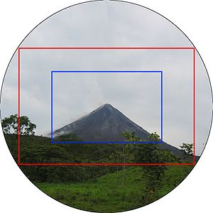
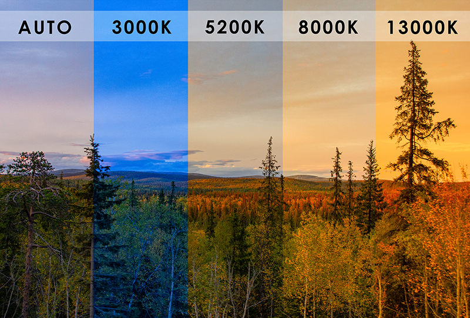
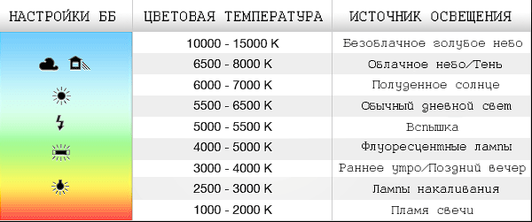

Характеристики камеры
Характеристики камеры
Взаимозависимы и взаимокомпенсируемые. Шкала экспозиции (экспонометр) - баланс этих характеристик. Экспозиция должна быть посередине.
Crop and full-frame
Профессионалы используют full-frame, так как они дают больше преимуществ.

Баланс белого


Измеряется в градусах K. Можно ставить авто (AWB - авто).
Типы сенсоров (матриц)
По размеру сенсора
-
Полный кадр (Full-Frame) - 36 × 24 мм (соотношение 6:4)
- Преимущества: лучшее качество при слабом освещении, малая глубина резкости
- Недостатки: высокая стоимость, большие размеры объективов
-
Кроп-матрица (Crop) - APS-C (23.6×15.8 мм ≈ 24 x 16, соотношение 6:4)
- Кроп-фактор: 1.5-1.6x
- Преимущества: компактность, доступность
-
Средний формат (Medium Format) - 44×33 мм, 54×40 мм, 60×45 мм (соотношение 4:3)
- Кроп-фактор: 0.64-0.79x (относительно полного кадра)
- Преимущества: максимальное качество, огромная глубина резкости, профессиональная печать
- Недостатки: очень высокая стоимость, большие размеры, медленная работа
- Применение: коммерческая фотография, пейзажи, портреты высокого класса
-
Микро 4/3 - 17.3×13.0 мм
- Кроп-фактор: 2x
- Преимущества: очень компактные камеры и объективы
-
1 дюйм - 13.2×8.8 мм
- Используется в компактных камерах
-
1/2.3 дюйма - 6.17×4.55 мм
- Бюджетные компактные камеры
По технологии
-
CMOS - современный стандарт
- Низкое энергопотребление
- Высокая скорость чтения
- Хорошее качество при высоких ISO
-
CCD - устаревшая технология
- Лучшее качество цвета
- Высокое энергопотребление
- Медленное чтение
Уровни профессионализма
Любительские (Entry-level)
- Простые настройки
- Автоматические режимы
- Базовые функции
- Доступная цена
Полупрофессиональные (Mid-range)
- Расширенные настройки
- Лучшее качество сборки
- Дополнительные функции
- Умеренная цена
Профессиональные (Professional)
- Максимальное качество
- Прочная конструкция
- Полный контроль
- Высокая цена
Основные характеристики
Разрешение (мегапиксели)
- 12-16 МП - достаточно для печати A4
- 20-24 МП - оптимальный баланс
- 30+ МП - для крупной печати и кадрирования
Чувствительность (ISO)
- Базовая ISO - 100-200
- Максимальная ISO - 25600-102400
- Рабочие значения - до 3200-6400
Диапазон выдержек
- Медленные - 30 сек - 1/60 сек
- Средние - 1/125 - 1/1000 сек
- Быстрые - 1/2000 - 1/8000 сек
Функциональные возможности
Система автофокуса
- Количество точек - 9-693 точки
- Типы датчиков - фазовый, контрастный, гибридный
- Скорость фокусировки - важна для съемки движения
Скорость съемки
- Серийная съемка - 3-20 кадров/сек
- Буфер - количество кадров в серии
- Скорость затвора - минимальная выдержка
Стабилизация
- В камере - сдвиг сенсора
- В объективе - оптическая стабилизация
- Электронная - программная стабилизация
Видео возможности
- Разрешение - 4K, 1080p, 720p
- Частота кадров - 24/25/30/50/60/120 fps
- Битрейт - качество сжатия
Дополнительные характеристики
Корпус и управление
- Материал - пластик, магниевый сплав
- Защита - пыле- и влагозащита
- Эргономика - удобство использования
Память и подключения
- Типы карт - SD, CF, XQD
- Интерфейсы - USB, HDMI, Wi-Fi, Bluetooth
- Батарея - емкость и время работы
Настройки камеры
Основные параметры экспозиции
Выдержка (Shutter Speed)
- 1/4000 - 1/1000 сек - заморозка быстрого движения
- 1/500 - 1/125 сек - портреты, общие сцены
- 1/60 - 1/30 сек - статичные объекты
- 1/15 - 30 сек - длинные выдержки, размытие движения
Диафрагма (Aperture)
- f/1.4 - f/2.8 - малая глубина резкости, размытый фон
- f/4 - f/8 - оптимальная резкость, средняя глубина
- f/11 - f/22 - большая глубина резкости, все в фокусе
ISO (чувствительность, мощность сигнала)
- ISO 100-400 - дневной свет, студия
- ISO 800-1600 - слабое освещение
- ISO 3200-6400 - очень слабое освещение
- ISO 12800+ - экстремальные условия
Настройки качества изображения
Формат файла
- RAW - максимальное качество, требует обработки
- JPEG Fine - высокое качество, готов к использованию
- JPEG Normal - среднее качество, меньший размер
- HEIF - современный формат, лучшее сжатие
Размер изображения
- Полный размер - максимальное разрешение
- Средний - компромисс между качеством и размером
- Малый - для быстрой передачи
Качество сжатия
- Fine/High - минимальное сжатие
- Normal - стандартное сжатие
- Basic - максимальное сжатие
Настройки цвета и баланса
Баланс белого (White Balance)
- Автоматический (AWB) - для большинства ситуаций
- Дневной свет (Daylight) - 5500K
- Тень (Shade) - 7000K
- Облачно (Cloudy) - 6500K
- Лампы накаливания (Tungsten) - 3200K
- Люминесцентные (Fluorescent) - 4000K
- Ручной (Custom) - точная настройка
Профиль изображения
- Standard - естественные цвета
- Vivid/Saturated - насыщенные цвета
- Neutral - приглушенные цвета
- Monochrome - черно-белое
- Portrait - для портретов
- Landscape - для пейзажей
Настройки фокусировки
Режим автофокуса
- AF-S (Single) - для статичных объектов
- AF-C (Continuous) - для движущихся объектов
- AF-A (Auto) - автоматический выбор
- MF (Manual) - ручная фокусировка
Область фокусировки
- Одна точка - точная фокусировка
- Группа точек - для движущихся объектов
- Автоматический выбор - камера выбирает сама
- Зональный - фокус по зонам
Настройки экспозиции
Режим экспозиции
- Программный (P) - автоматический
- Приоритет диафрагмы (A/Av) - контроль глубины резкости
- Приоритет выдержки (S/Tv) - контроль движения
- Ручной (M) - полный контроль
Компенсация экспозиции
- +/- 3-5 EV - коррекция яркости
- +1 EV - осветление
- -1 EV - затемнение
Измерение экспозиции
- Матричное/Оценочное - для большинства сцен
- Центровзвешенное - для портретов
- Точечное - для точного измерения
Дополнительные настройки
Стабилизация изображения
- Включена - для съемки с рук
- Выключена - для штатива
- Автоматическая - умная стабилизация
Режим съемки
- Одиночный кадр - стандартная съемка
- Серийная съемка - для движения
- Таймер - для групповых фото
- Дистанционное управление - через приложение
Настройки дисплея
- Гистограмма - контроль экспозиции
- Сетка - композиция
- Уровень - выравнивание горизонта
- Мигание - пересвеченные области